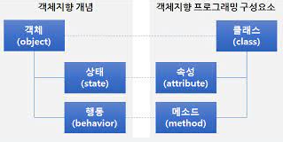
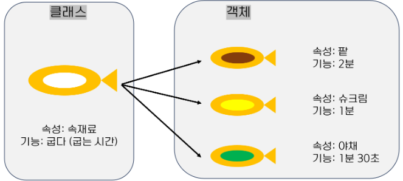

객체지향 프로그래밍이란?(Object-Oriented Programming, OOP)

프로그래밍에서 필요한 데이터를 추상화 시켜 상태와 행위를 가진 객체로 만들고,
객체들간의 상호작용을 통해 로직을 구성하는 프로그래밍 방법이다.
객체란?

객체는 프로그램에서 사용되는 데이터 또는 식별자에 의해 참조되는 공간을 의미하며 값을 저장 할 변수와 작업을 수행 할 메소드를 서로 연관된 것들끼리 묶어서 만든 것을
객체라고 할 수 있다.
객체지향 프로그래밍을 붕어빵기계로 표현 할 수 있는데, 객체가 각기 다른 맛인 붕어빵이 될 것이고 붕어빵 트레이로 각기 다른 맛인 붕어빵을 만드는 방식이 객체지향
프로그래밍이라고 할 수 있다.
객체 지향 프로그래밍의 특징?
객체 지향 프로그래밍은 크게 추상화 , 캡슐화 , 상속 , 다형성 의 네가지 특징을 가진다.
객체 지향 프로그래밍의 장점?
클래스 단위로 모듈화시켜서 개발하기 때문에 업무 분담이 편리하고 대규모 소프트웨어 개발에 적합하다.
클래스 단위로 수정이 가능하기 때문에 유지 보수가 편리하다.
클래스를 재사용하거나 상속을 통해 확장함으로써 코드 재사용이 용이하다.
객체 지향 프로그래밍의 단점?
처리속도가 상대적으로 느리다.
객체의 수가 많아짐에 따라 용량이 커질 수 있다.
설계시 많은 시간과 노력이 필요하게 될 수 있다.